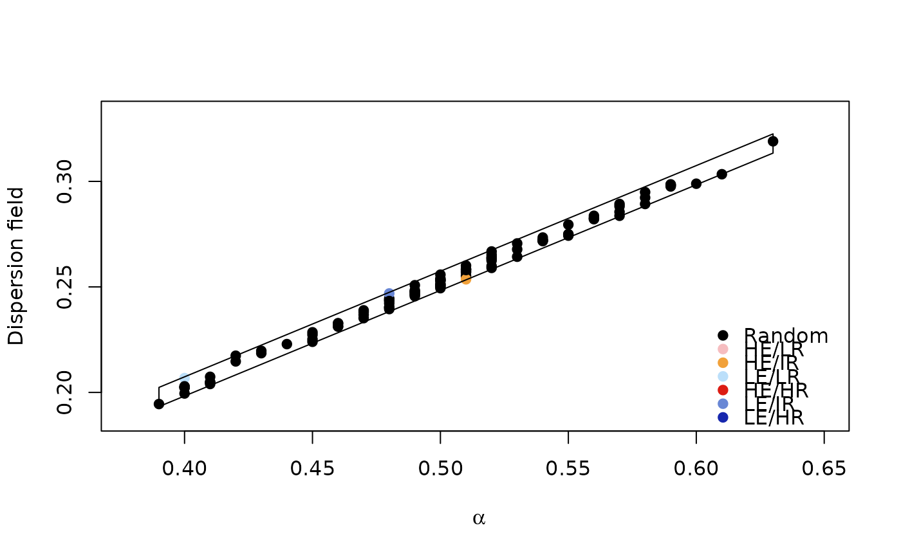
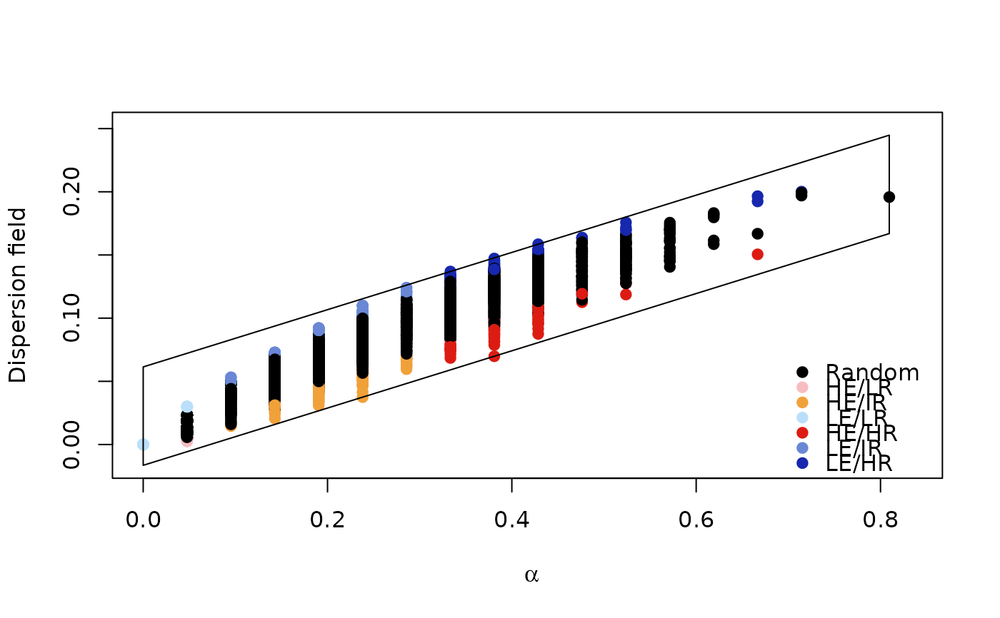
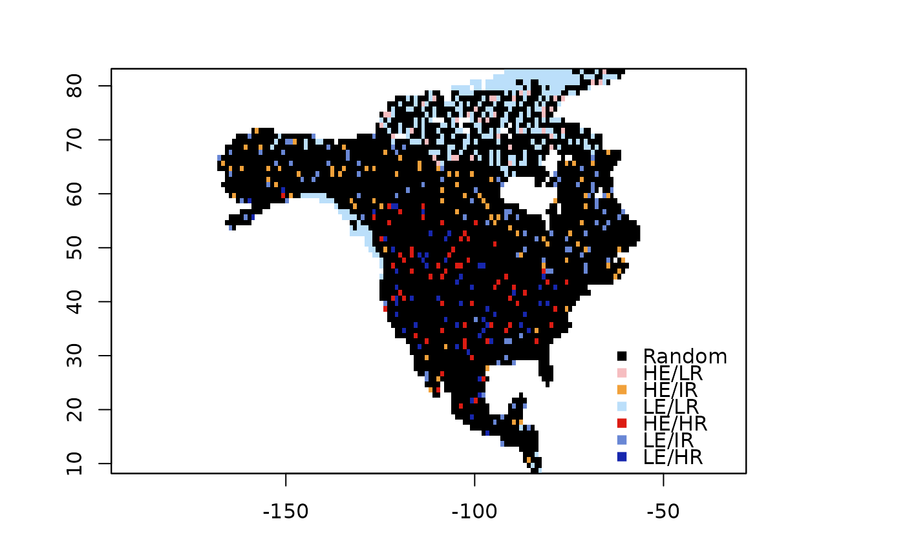

range_diversity_analysis: diversity analysis
Source:R/diversity_range_analysis.R
diversity_range_analysis.Rddiversity_range_analysis biodiversity indices related to diversity-range plots
Usage
diversity_range_analysis(
pam,
xy_mat = NULL,
lower_interval = 0.05,
upper_interval = 0.95,
raster_templete = NULL,
niter = 100,
return_null_dfield = FALSE,
parallel = TRUE,
n_cores = 2
)Arguments
- pam
A Presence-Absence-Matrix of matrix class or sparse matrix.
- xy_mat
A two dimensional matrix with longitude and latitude data.
- lower_interval
Lower interval.
- upper_interval
Upper interval.
- raster_templete
A raster template.
- niter
Number of iterations to obtain the distribution.
- return_null_dfield
If TRUE the null distribution of dispersal field will be returned.
- parallel
If TRUE the computations will be performed in parallel.
- n_cores
Number of cores for the parallel computation.
Value
An object of class diversity_range. The main
result is the diversity range analysis which shows jointly two indices
describing the community composition of every cell in the grid:
(1) the relative number of species, and (2) the mean dispersion field
(see plot method for plot (Soberon et al. 2022).
The contains 12 slots with different measurements of biodiversity such
as alpha diversity (species richness in each site or pixel),
omega (size of the area of distribution of each species),
dispersion field (the standardized size of the area of distribution of
all species occurring in each pixel).
Details
For more information about the biodiversity indices
see Soberon and Cavner (2015). For detail about the diversity range analysis
see Soberon et al. (2022). To plot diversity range results use
plot method for objects of class
diversity_range.
References
Soberón J, Cobos ME, Nuñez-Penichet C (2021). “Visualizing species richness and site similarity from presence-absence matrices.” Biodiversity Informatics, 16(1), 20–27. doi:10.17161/bi.v16i1.14782 , https://journals.ku.edu/jbi/article/view/14782. .
Soberon J, Cavner J (2015). “Indices of Biodiversity Pattern Based on Presence-Absence Matrices: A GIS Implementation.” Biodiversity Informatics, 10, 22--34. .
Examples
set.seed(111)
pam <- matrix(rbinom(10000,1,0.5),nrow = 100,ncol = 1000)
rdivan <- bamm::diversity_range_analysis(pam=pam,
parallel = FALSE,
niter = 10,
return_null_dfield=TRUE)
#> New names:
#> • `dfield` -> `dfield...1`
#> • `dfield` -> `dfield...2`
#> • `dfield` -> `dfield...3`
#> • `dfield` -> `dfield...4`
#> • `dfield` -> `dfield...5`
#> • `dfield` -> `dfield...6`
#> • `dfield` -> `dfield...7`
#> • `dfield` -> `dfield...8`
#> • `dfield` -> `dfield...9`
#> • `dfield` -> `dfield...10`
bamm::plot(rdivan,plot_type="diversity_range")

# Lagomorphos
# \donttest{
lagos_path <- system.file("extdata/conejos",
package = "bamm")
enm_path <- list.files(lagos_path,
pattern = ".tif",
full.names = TRUE)
en_models <- raster::stack(enm_path) >0.01
nonas <- which(!is.na(en_models[[1]][]))
xy_mat <- sp::coordinates(en_models[[1]])[ nonas,]
pam <- bamm::models2pam(en_models,sparse=FALSE)
rdivan <- bamm::diversity_range_analysis(pam=pam,
xy_mat=xy_mat,
raster_templete = en_models[[1]],
parallel=TRUE,
n_cores=2,
return_null_dfield=TRUE)
#> New names:
#> • `dfield` -> `dfield...1`
#> • `dfield` -> `dfield...2`
#> • `dfield` -> `dfield...3`
#> • `dfield` -> `dfield...4`
#> • `dfield` -> `dfield...5`
#> • `dfield` -> `dfield...6`
#> • `dfield` -> `dfield...7`
#> • `dfield` -> `dfield...8`
#> • `dfield` -> `dfield...9`
#> • `dfield` -> `dfield...10`
#> • `dfield` -> `dfield...11`
#> • `dfield` -> `dfield...12`
#> • `dfield` -> `dfield...13`
#> • `dfield` -> `dfield...14`
#> • `dfield` -> `dfield...15`
#> • `dfield` -> `dfield...16`
#> • `dfield` -> `dfield...17`
#> • `dfield` -> `dfield...18`
#> • `dfield` -> `dfield...19`
#> • `dfield` -> `dfield...20`
#> • `dfield` -> `dfield...21`
#> • `dfield` -> `dfield...22`
#> • `dfield` -> `dfield...23`
#> • `dfield` -> `dfield...24`
#> • `dfield` -> `dfield...25`
#> • `dfield` -> `dfield...26`
#> • `dfield` -> `dfield...27`
#> • `dfield` -> `dfield...28`
#> • `dfield` -> `dfield...29`
#> • `dfield` -> `dfield...30`
#> • `dfield` -> `dfield...31`
#> • `dfield` -> `dfield...32`
#> • `dfield` -> `dfield...33`
#> • `dfield` -> `dfield...34`
#> • `dfield` -> `dfield...35`
#> • `dfield` -> `dfield...36`
#> • `dfield` -> `dfield...37`
#> • `dfield` -> `dfield...38`
#> • `dfield` -> `dfield...39`
#> • `dfield` -> `dfield...40`
#> • `dfield` -> `dfield...41`
#> • `dfield` -> `dfield...42`
#> • `dfield` -> `dfield...43`
#> • `dfield` -> `dfield...44`
#> • `dfield` -> `dfield...45`
#> • `dfield` -> `dfield...46`
#> • `dfield` -> `dfield...47`
#> • `dfield` -> `dfield...48`
#> • `dfield` -> `dfield...49`
#> • `dfield` -> `dfield...50`
#> • `dfield` -> `dfield...51`
#> • `dfield` -> `dfield...52`
#> • `dfield` -> `dfield...53`
#> • `dfield` -> `dfield...54`
#> • `dfield` -> `dfield...55`
#> • `dfield` -> `dfield...56`
#> • `dfield` -> `dfield...57`
#> • `dfield` -> `dfield...58`
#> • `dfield` -> `dfield...59`
#> • `dfield` -> `dfield...60`
#> • `dfield` -> `dfield...61`
#> • `dfield` -> `dfield...62`
#> • `dfield` -> `dfield...63`
#> • `dfield` -> `dfield...64`
#> • `dfield` -> `dfield...65`
#> • `dfield` -> `dfield...66`
#> • `dfield` -> `dfield...67`
#> • `dfield` -> `dfield...68`
#> • `dfield` -> `dfield...69`
#> • `dfield` -> `dfield...70`
#> • `dfield` -> `dfield...71`
#> • `dfield` -> `dfield...72`
#> • `dfield` -> `dfield...73`
#> • `dfield` -> `dfield...74`
#> • `dfield` -> `dfield...75`
#> • `dfield` -> `dfield...76`
#> • `dfield` -> `dfield...77`
#> • `dfield` -> `dfield...78`
#> • `dfield` -> `dfield...79`
#> • `dfield` -> `dfield...80`
#> • `dfield` -> `dfield...81`
#> • `dfield` -> `dfield...82`
#> • `dfield` -> `dfield...83`
#> • `dfield` -> `dfield...84`
#> • `dfield` -> `dfield...85`
#> • `dfield` -> `dfield...86`
#> • `dfield` -> `dfield...87`
#> • `dfield` -> `dfield...88`
#> • `dfield` -> `dfield...89`
#> • `dfield` -> `dfield...90`
#> • `dfield` -> `dfield...91`
#> • `dfield` -> `dfield...92`
#> • `dfield` -> `dfield...93`
#> • `dfield` -> `dfield...94`
#> • `dfield` -> `dfield...95`
#> • `dfield` -> `dfield...96`
#> • `dfield` -> `dfield...97`
#> • `dfield` -> `dfield...98`
#> • `dfield` -> `dfield...99`
#> • `dfield` -> `dfield...100`
bamm::plot(rdivan,plot_type="diversity_range")

bamm::plot(rdivan,plot_type="diversity_range_map")

if(requireNamespace("plotly")){
#bamm::plot(rdivan,plot_type="diversity_range_interactive")
}
#> Loading required namespace: plotly
#> NULL
# }